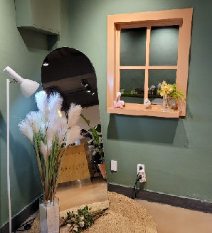
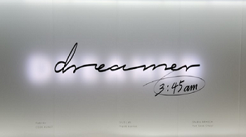

친구 만날 때는 감성 카페,
예술 쪽은 잘 모르기 때문에 전문적으로 감상을 하지는 못하지만
듣는 것도 좋아하고 부르는 것도 좋아하지만
1. café
친구 만날 때는 감성 카페,
카공하러 갈 때는 보통 대형 카페를 선호합니다!
2. 전시회
예술 쪽은 잘 모르기 때문에 전문적으로 감상을 하지는 못하지만
힐링되기도 하고, 신기하기도 해서 전시회 보는 것을 좋아합니다.
전시회 끝나고 굿즈 쇼핑하는 것도 좋아해요...💓
3. 노래
듣는 것도 좋아하고 부르는 것도 좋아하지만
노래 실력은 형편없기 때문에 혼코노를 좋아합니다…!
대중적인 노래를 좋아하는데 그 중에서도 특히 발라드를
좋아합니다.
요즘은 태연 노래에 빠져있습니다…!